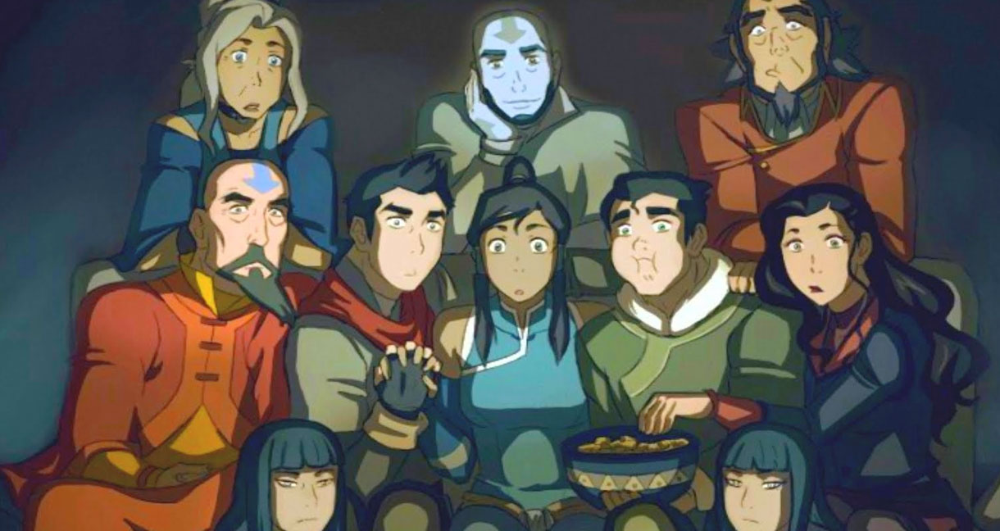

About Korra
Avatar Korra was born in the Southern Water tribe after the death of Avatar Aang.
Korra and the homies
Korra's Characteristics
- She can bend all four elements
- She is the first Metal bending Avatar
- She is the first Avatar in the new cycle
- She is here, queer, get used to it
Team Avatar
Korra has some pretty real ones in her circle. They get to the real. Click the links below to learn more about them